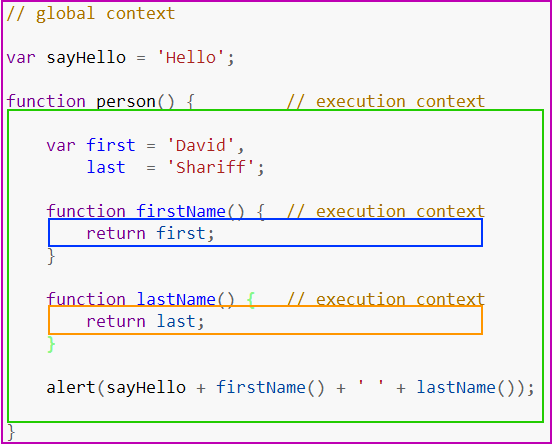
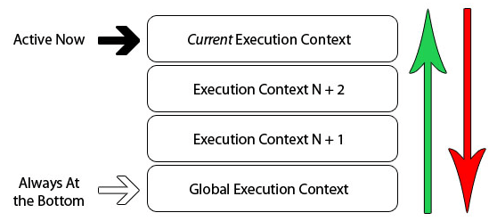

JavaScript中执行上下文和执行栈是什么？
参考答案
一、执行上下文
简单的来说，执行上下文是一种对Javascript代码执行环境的抽象概念，也就是说只要有Javascript代码运行，那么它就一定是运行在执行上下文中
执行上下文的类型分为三种：
- 全局执行上下文：只有一个，浏览器中的全局对象就是
window对象，this指向这个全局对象 - 函数执行上下文：存在无数个，只有在函数被调用的时候才会被创建，每次调用函数都会创建一个新的执行上下文
- Eval 函数执行上下文： 指的是运行在
eval函数中的代码，很少用而且不建议使用
下面给出全局上下文和函数上下文的例子：

紫色框住的部分为全局上下文，蓝色和橘色框起来的是不同的函数上下文。只有全局上下文（的变量）能被其他任何上下文访问
可以有任意多个函数上下文，每次调用函数创建一个新的上下文，会创建一个私有作用域，函数内部声明的任何变量都不能在当前函数作用域外部直接访问
二、生命周期
执行上下文的生命周期包括三个阶段：创建阶段 → 执行阶段 → 回收阶段
创建阶段
创建阶段即当函数被调用，但未执行任何其内部代码之前
创建阶段做了三件事：
- 确定 this 的值，也被称为
This Binding - LexicalEnvironment（词法环境） 组件被创建
- VariableEnvironment（变量环境） 组件被创建
伪代码如下：
ExecutionContext = {
ThisBinding = <this value>, // 确定this
LexicalEnvironment = { ... }, // 词法环境
VariableEnvironment = { ... }, // 变量环境
}This Binding
确定this的值我们前面讲到，this的值是在执行的时候才能确认，定义的时候不能确认
词法环境
词法环境有两个组成部分：
- 全局环境：是一个没有外部环境的词法环境，其外部环境引用为
null，有一个全局对象，this的值指向这个全局对象
- 函数环境：用户在函数中定义的变量被存储在环境记录中，包含了
arguments对象，外部环境的引用可以是全局环境，也可以是包含内部函数的外部函数环境
伪代码如下：
GlobalExectionContext = { // 全局执行上下文
LexicalEnvironment: { // 词法环境
EnvironmentRecord: { // 环境记录
Type: "Object", // 全局环境
// 标识符绑定在这里
outer: <null> // 对外部环境的引用
}
}
FunctionExectionContext = { // 函数执行上下文
LexicalEnvironment: { // 词法环境
EnvironmentRecord: { // 环境记录
Type: "Declarative", // 函数环境
// 标识符绑定在这里 // 对外部环境的引用
outer: <Global or outer function environment reference>
}
}变量环境
变量环境也是一个词法环境，因此它具有上面定义的词法环境的所有属性
在 ES6 中，词法环境和变量环境的区别在于前者用于存储函数声明和变量（ let 和 const ）绑定，而后者仅用于存储变量（ var ）绑定
举个例子
let a = 20;
const b = 30;
var c;
function multiply(e, f) {
var g = 20;
return e * f * g;
}
c = multiply(20, 30);执行上下文如下：
GlobalExectionContext = {
ThisBinding: <Global Object>,
LexicalEnvironment: { // 词法环境
EnvironmentRecord: {
Type: "Object",
// 标识符绑定在这里
a: < uninitialized >,
b: < uninitialized >,
multiply: < func >
}
outer: <null>
},
VariableEnvironment: { // 变量环境
EnvironmentRecord: {
Type: "Object",
// 标识符绑定在这里
c: undefined,
}
outer: <null>
}
}
FunctionExectionContext = {
ThisBinding: <Global Object>,
LexicalEnvironment: {
EnvironmentRecord: {
Type: "Declarative",
// 标识符绑定在这里
Arguments: {0: 20, 1: 30, length: 2},
},
outer: <GlobalLexicalEnvironment>
},
VariableEnvironment: {
EnvironmentRecord: {
Type: "Declarative",
// 标识符绑定在这里
g: undefined
},
outer: <GlobalLexicalEnvironment>
}
}留意上面的代码，let和const定义的变量a和b在创建阶段没有被赋值，但var声明的变量从在创建阶段被赋值为undefined
这是因为，创建阶段，会在代码中扫描变量和函数声明，然后将函数声明存储在环境中
但变量会被初始化为undefined(var声明的情况下)和保持uninitialized(未初始化状态)(使用let和const声明的情况下)
这就是变量提升的实际原因
执行阶段
在这阶段，执行变量赋值、代码执行
如果 Javascript 引擎在源代码中声明的实际位置找不到变量的值，那么将为其分配 undefined 值
回收阶段
执行上下文出栈等待虚拟机回收执行上下文
二、执行栈
执行栈，也叫调用栈，具有 LIFO（后进先出）结构，用于存储在代码执行期间创建的所有执行上下文

当Javascript引擎开始执行你第一行脚本代码的时候，它就会创建一个全局执行上下文然后将它压到执行栈中
每当引擎碰到一个函数的时候，它就会创建一个函数执行上下文，然后将这个执行上下文压到执行栈中
引擎会执行位于执行栈栈顶的执行上下文(一般是函数执行上下文)，当该函数执行结束后，对应的执行上下文就会被弹出，然后控制流程到达执行栈的下一个执行上下文
举个例子：
let a = 'Hello World!';
function first() {
console.log('Inside first function');
second();
console.log('Again inside first function');
}
function second() {
console.log('Inside second function');
}
first();
console.log('Inside Global Execution Context');转化成图的形式
简单分析一下流程：
- 创建全局上下文请压入执行栈
first函数被调用，创建函数执行上下文并压入栈- 执行
first函数过程遇到second函数，再创建一个函数执行上下文并压入栈 second函数执行完毕，对应的函数执行上下文被推出执行栈，执行下一个执行上下文first函数first函数执行完毕，对应的函数执行上下文也被推出栈中，然后执行全局上下文- 所有代码执行完毕，全局上下文也会被推出栈中，程序结束
执行上下文
执行上下文是JavaScript中定义变量或函数作用域的环境。它的主要类型包括：
- 全局执行上下文：代码在任何函数之外运行时的环境，是所有执行上下文的起点。
- 函数执行上下文：每当一个函数被调用时，都会创建一个新的函数执行上下文。
- 评估上下文（Eval）：
eval()函数内的代码执行环境，现代浏览器中很少使用。
执行栈
执行栈（Call Stack）是一个用于存储和管理 JavaScript 代码执行期间创建的所有执行上下文的栈结构。
特点
- 后进先出（LIFO）：执行栈遵循后进先出的原则，即最后进入栈的执行上下文会最先被执行。
- 单线程执行：JavaScript 引擎一次只能执行一个操作，即单线程执行。
执行过程
- 全局代码执行：全局执行上下文被推入执行栈。
- 函数调用：每当函数被调用，一个新的函数执行上下文被创建并推入栈顶。
- 执行完成：当函数执行完成，其执行上下文从栈中弹出，控制权返回给前一个执行上下文。
- 错误发生：如果在执行过程中发生错误，错误处理程序的执行上下文也会被推入栈中。